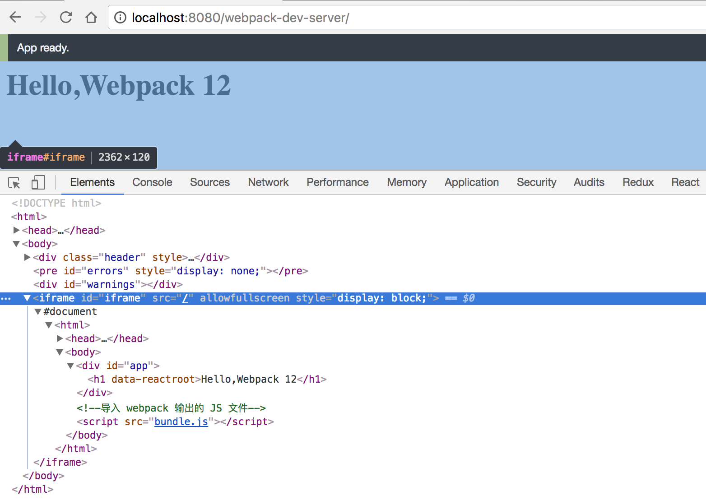

使用自动刷新
在开发阶段，修改源码是不可避免的操作。 对于开发网页来说，要想看到修改后的效果，需要刷新浏览器让其重新运行最新的代码才行。 虽然这相比于开发原生 iOS 和 Android 应用来说要方便很多，因为那需要重新编译这个项目再运行，但我们可以把这个体验优化的更好。 借助自动化的手段，可以把这些重复的操作交给代码去帮我们完成，在监听到本地源码文件发生变化时，自动重新构建出可运行的代码后再控制浏览器刷新。
Webpack 把这些功能都内置了，并且还提供多种方案可选。
文件监听
文件监听是在发现源码文件发生变化时，自动重新构建出新的输出文件。
Webpack 官方提供了两大模块，一个是核心的 webpack，一个是在1-6 使用DevServer 中提到的 webpack-dev-server 扩展模块。 文件监听功能是 webpack 模块所带有的。
在2-7 其它配置项 中曾介绍过 Webpack 支持文件监听相关的配置项如下：
module.export = {
// 只有在开启监听模式时，watchOptions 才有意义
// 默认为 false，也就是不开启
watch: true,
// 监听模式运行时的参数
// 在开启监听模式时，才有意义
watchOptions: {
// 不监听的文件或文件夹，支持正则匹配
// 默认为空
ignored: /node_modules/,
// 监听到变化发生后等 300ms 再去执行动作，截流，
// 防止文件更新太快导致重新编译频率太快。默认 300ms
aggregateTimeout: 300,
// 判断文件是否发生变化是通过不停的去询问系统指定文件有没有变化实现的
// 默认每秒问 1000 次
poll: 1000
}
}
要让 Webpack 开启监听模式，有两种方式：
- 在配置文件
webpack.config.js中设置watch: true。 - 在执行启动 Webpack 命令时，带上
--watch参数，完整命令是webpack --watch。
文件监听工作原理
在 Webpack 中监听一个文件发生变化的原理是定时的去获取这个文件的最后编辑时间，每次都存下最新的最后编辑时间，如果发现当前获取的和最后一次保存的最后编辑时间不一致，就认为该文件发生了变化。
配置项中的 watchOptions.poll 就是用于控制定时检查的周期，具体含义是每秒检查多少次。
当发现某个文件发生了变化时，并不会立刻告诉监听者，而是先缓存起来，收集一段时间的变化后，再一次性告诉监听者。
配置项中的 watchOptions.aggregateTimeout 就是用于配置这个等待时间。
这样做的目的是因为我们在编辑代码的过程中可能会高频的输入文字导致文件变化的事件高频的发生，如果每次都重新执行构建就会让构建卡死。
对于多个文件来说，原理相似，只不过会对列表中的每一个文件都定时的执行检查。 但是这个需要监听的文件列表是怎么确定的呢？ 默认情况下 Webpack 会从配置的 Entry 文件出发，递归解析出 Entry 文件所依赖的文件，把这些依赖的文件都加入到监听列表中去。 可见 Webpack 这一点还是做的很智能的，不是粗暴的直接监听项目目录下的所有文件。
由于保存文件的路径和最后编辑时间需要占用内存，定时检查周期检查需要占用 CPU 以及文件 IO，所以最好减少需要监听的文件数量和降低检查频率。
优化文件监听性能
在明白文件监听工作原理后，就好分析如何优化文件监听性能了。
开启监听模式时，默认情况下会监听配置的 Entry 文件和所有其递归依赖的文件。
在这些文件中会有很多存在于 node_modules 下，因为如今的 Web 项目会依赖大量的第三方模块。
在大多数情况下我们都不可能去编辑 node_modules 下的文件，而是编辑自己建立的源码文件。
所以一个很大的优化点就是忽略掉 node_modules 下的文件，不监听它们。相关配置如下：
module.export = {
watchOptions: {
// 不监听的 node_modules 目录下的文件
ignored: /node_modules/,
}
}
采用这种方法优化后，你的 Webpack 消耗的内存和 CPU 将会大大降低。
有时你可能会觉得 node_modules 目录下的第三方模块有 bug，想修改下第三方模块的文件在自己的项目中试试。 在这种情况下使用了忽略掉 node_modules 目录下的文件优化后，你需要重启构建以看到最新效果。 但这种情况毕竟是非常少见的。
除了忽略掉部分文件的优化外，还有如下两种方法：
watchOptions.aggregateTimeout值越大性能越好，因为这能降低重新构建的频率。watchOptions.poll值越小越好，因为这能降低检查的频率。
但两种优化方法的后果是会让你感觉到监听模式的反应和灵敏度降低了。
自动刷新浏览器
监听到文件更新后的下一步是去刷新浏览器，webpack 模块负责监听文件，webpack-dev-server 模块则负责刷新浏览器。 在使用 webpack-dev-server 模块去启动 webpack 模块时，webpack 模块的监听模式默认会被开启。 webpack 模块会在文件发生变化时告诉 webpack-dev-server 模块。
自动刷新的原理
控制浏览器刷新有三种方法：
- 借助浏览器扩展去通过浏览器提供的接口刷新，WebStorm IDE 的 LiveEdit 功能就是这样实现的。
- 往要开发的网页中注入代理客户端代码，通过代理客户端去刷新整个页面。
- 把要开发的网页装进一个 iframe 中，通过刷新 iframe 去看到最新效果。
DevServer 支持第2、3种方法，第2种是 DevServer 默认采用的刷新方法。
通过 DevServer 启动构建后，你会看到如下日志：
> webpack-dev-server
Project is running at http://localhost:8080/
webpack output is served from /
Hash: e4e2f9508ac286037e71
Version: webpack 3.5.5
Time: 1566ms
Asset Size Chunks Chunk Names
bundle.js 1.07 MB 0 [emitted] [big] main
bundle.js.map 1.27 MB 0 [emitted] main
[115] multi (webpack)-dev-server/client?http://localhost:8080 ./main.js 40 bytes {0} [built]
[116] (webpack)-dev-server/client?http://localhost:8080 5.83 kB {0} [built]
[117] ./node_modules/url/url.js 23.3 kB {0} [built]
[120] ./node_modules/querystring-es3/index.js 127 bytes {0} [built]
[123] ./node_modules/strip-ansi/index.js 161 bytes {0} [built]
[125] ./node_modules/loglevel/lib/loglevel.js 6.74 kB {0} [built]
[126] (webpack)-dev-server/client/socket.js 856 bytes {0} [built]
[158] (webpack)-dev-server/client/overlay.js 3.6 kB {0} [built]
[159] ./node_modules/ansi-html/index.js 4.26 kB {0} [built]
[163] (webpack)/hot nonrecursive ^\.\/log$ 170 bytes {0} [built]
[165] (webpack)/hot/emitter.js 77 bytes {0} [built]
[167] ./main.js 2.28 kB {0} [built]
+ 255 hidden modules
细心的你会观察到输出的 bundle.js 中包含了以下七个模块：
[116] (webpack)-dev-server/client?http://localhost:8080 5.83 kB {0} [built]
[117] ./node_modules/url/url.js 23.3 kB {0} [built]
[120] ./node_modules/querystring-es3/index.js 127 bytes {0} [built]
[123] ./node_modules/strip-ansi/index.js 161 bytes {0} [built]
[125] ./node_modules/loglevel/lib/loglevel.js 6.74 kB {0} [built]
[126] (webpack)-dev-server/client/socket.js 856 bytes {0} [built]
[158] (webpack)-dev-server/client/overlay.js 3.6 kB {0} [built]
这七个模块就是代理客户端的代码，它们被打包进了要开发的网页代码中。
在浏览器中打开网址 http://localhost:8080/ 后，
在浏览器的开发者工具中你会发现由代理客户端向 DevServer 发起的 WebSocket 连接：

优化自动刷新的性能
在2-6 DevServer中曾介绍过 devServer.inline 配置项，它就是用来控制是否往 Chunk 中注入代理客户端的，默认会注入。
事实上，在开启 inline 时，DevServer 会为每个输出的 Chunk 中注入代理客户端的代码，当你的项目需要输出的 Chunk 有很多个时，这会导致你的构建缓慢。
其实要完成自动刷新，一个页面只需要一个代理客户端就行了，DevServer 之所以粗暴的为每个 Chunk 都注入，是因为它不知道某个网页依赖哪几个 Chunk，索性就全部都注入一个。
网页只要依赖了其中任何一个 Chunk，代理客户端就被注入到网页中去。
这里优化的思路是关闭还不够优雅的 inline 模式，只注入一个代理客户端。
为了关闭 inline 模式，在启动 DevServer 时，可通过执行命令 webpack-dev-server --inline false（也可以在配置文件中设置），这时输出的日志如下：
> webpack-dev-server --inline false
Project is running at http://localhost:8080/webpack-dev-server/
webpack output is served from /
Hash: 5a43fc44b5e85f4c2cf1
Version: webpack 3.5.5
Time: 1130ms
Asset Size Chunks Chunk Names
bundle.js 750 kB 0 [emitted] [big] main
bundle.js.map 897 kB 0 [emitted] main
[81] ./main.js 2.29 kB {0} [built]
+ 169 hidden modules
和前面的不同在于
- 入口网址变成了
http://localhost:8080/webpack-dev-server/ bundle.js中不再包含代理客户端的代码了
在浏览器中打开网址 http://localhost:8080/webpack-dev-server/ 后，你会看到如下效果：

要开发的网页被放进了一个 iframe 中，编辑源码后，iframe 会被自动刷新。 同时你会发现构建时间从 1566ms 减少到了 1130ms，说明优化生效了。构建性能提升的效果在要输出的 Chunk 数量越多时会显得越突出。
在你关闭了 inline 后，DevServer 会自动地提示你通过新网址
http://localhost:8080/webpack-dev-server/去访问，这点是做的很人心化的。
如果你不想通过 iframe 的方式去访问，但同时又想让网页保持自动刷新功能，你需要手动往网页中注入代理客户端脚本，往 index.html 中插入以下标签：
<!--注入 DevServer 提供的代理客户端脚本，这个服务是 DevServer 内置的-->
<script src="http://localhost:8080/webpack-dev-server.js"></script>
给网页注入以上脚本后，独立打开的网页就能自动刷新了。但是要注意在发布到线上时记得删除掉这段用于开发环境的代码。
本实例提供项目完整代码